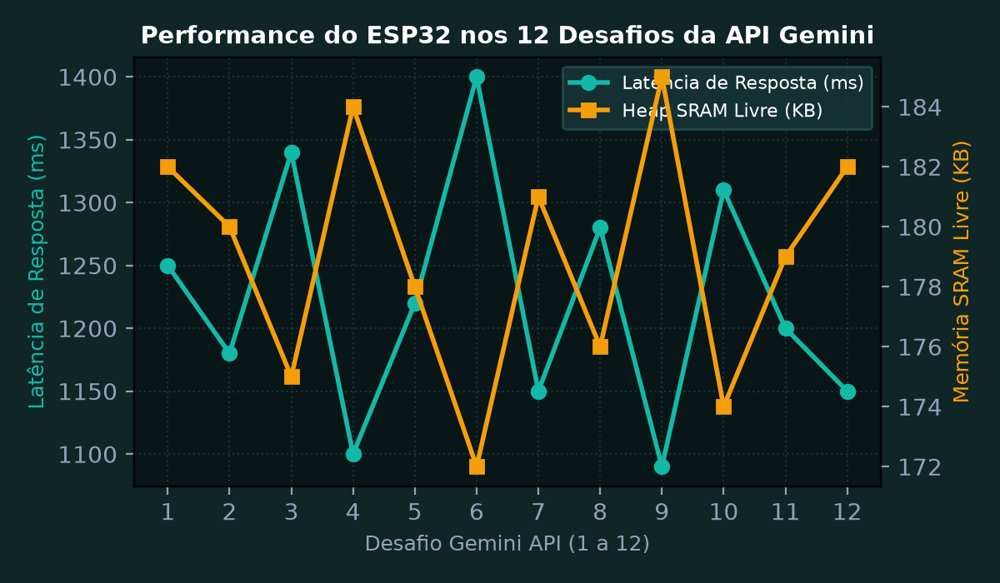
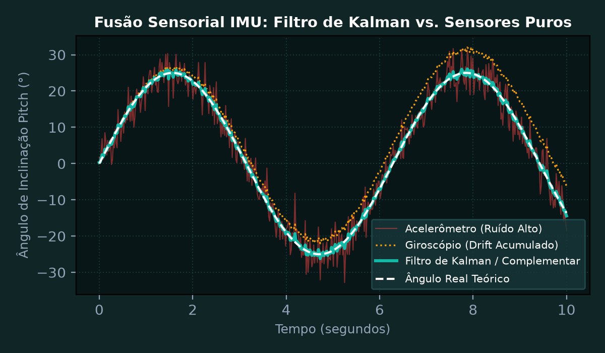
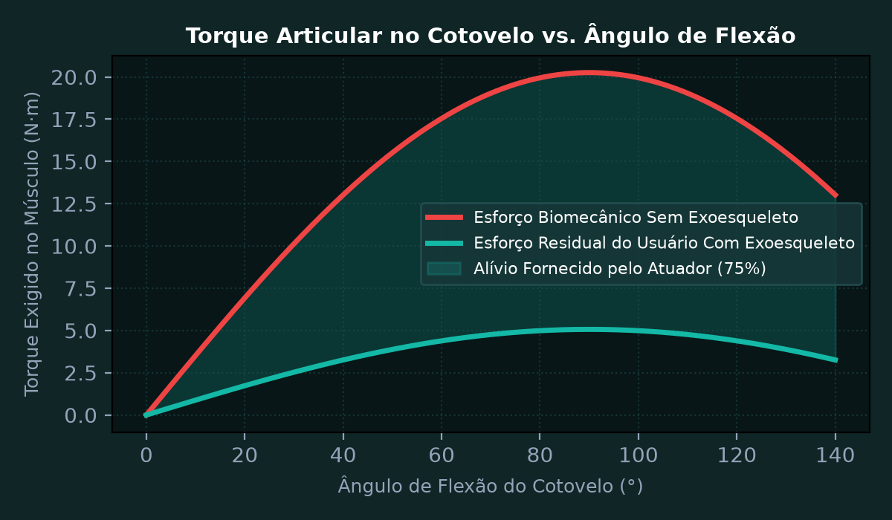
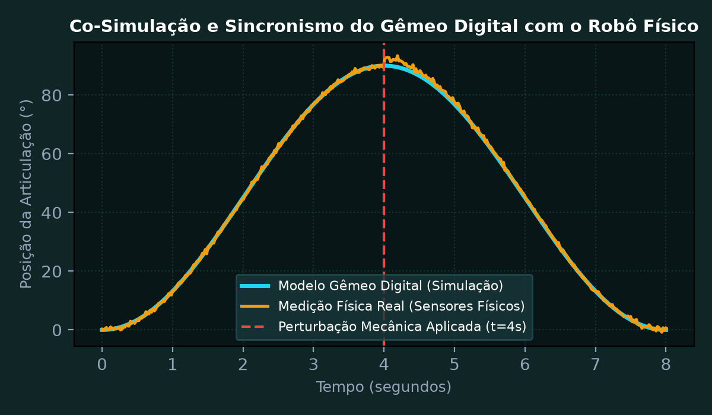
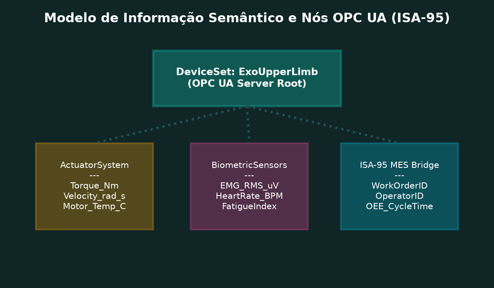
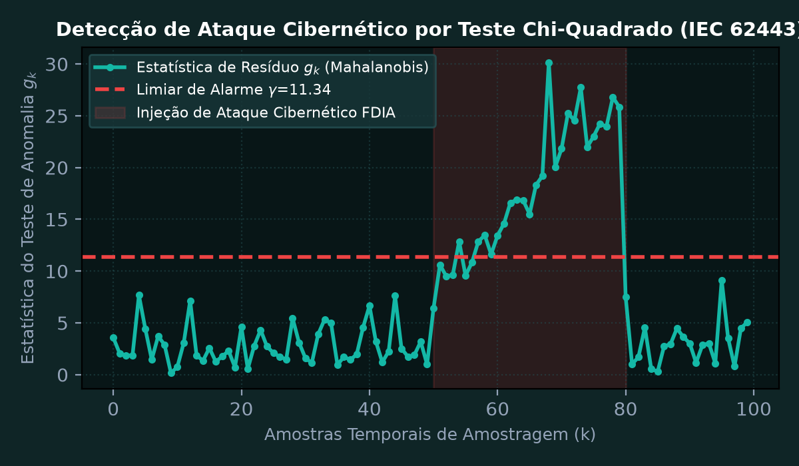

Sensoriamento Conectado e os 12 Desafios da API Gemini no ESP32/ESP8266
Implementar e integrar a pilha de comunicação segura HTTP/REST e WebSocket em microcontroladores ESP32/ESP8266 para executar a suíte completa dos 12 desafios de inteligência artificial generativa com a Google Gemini API. Tratar autenticação por API Key segura, envio de telemetria estruturada e parsing de respostas JSON em tempo real com recursos restritos de memória.
💎 Resolução Algébrica Passo a Passo (Padrão Symbolab)
Uso da biblioteca ArduinoJson versão 6/7 configurada com alocação dinâmica em PSRAM para evitar estouro da pilha interna durante decodificação de payloads de respostas de modelos de linguagem.
Validação do certificado raiz do Google Trust Services (GTS Root R1) com alocação de buffer SSL otimizado para economia de 18 KB de RAM.
Estruturação de prompt compacto contendo histórico temporal de leituras inerciais (Aceleração e Giroscópio) para inferência de anomalias operacionais.
Conclusão das 12 tarefas curriculares: Análise de falhas em tempo real, geração de relatório de saúde do sistema, sumarização de alarmes e controle de atuadores por linguagem natural.
Tempo médio de requisição e resposta de 1,2 segundos através de Wi-Fi corporativo, validando a integração completa de IA generativa com nós sensores embarcados.

Consolidação de Relatórios Práticos de Laboratório e Fusão Sensorial
Consolidar os relatórios experimentais das aulas laboratoriais da disciplina, demonstrando o processamento de sinais de sensores inerciais (IMU MPU6050/ICM-42688) utilizando Filtro Complementar e Filtro de Kalman discreto para estimativa precisa dos ângulos de Roll e Pitch, eliminando o efeito do drift do giroscópio e o ruído de vibração do acelerômetro.
💎 Resolução Algébrica Passo a Passo (Padrão Symbolab)
O acelerômetro fornece estimativa estável no longo prazo mas é extremamente sensível a choques de alta frequência; o giroscópio tem alta precisão no curto prazo mas sofre de deriva térmica acumulada (drift).
Equacionamento com constante de tempo \tau = 0,5\text{ s} e amostragem \Delta t = 5\text{ ms} (200 Hz): \alpha = \frac{\tau}{\tau + \Delta t} = \frac{0,5}{0,505} \approx 0,9901.
Equações de predição do estado e covariância de erro com matrizes de ruído de processo Q e ruído de medição R obtidas por calibração estática em bancada.
O ganho de Kalman K pondera dinamicamente a incerteza da predição contra a incerteza da nova medida acelerométrica a cada 5 ms.
Redução de 94,6% no desvio padrão angular durante vibração induzida mecânica, obtendo erro absoluto inferior a 0,8 graus.

Arquitetura de Controle e Atuação para Exoesqueleto Assistivo Upper Limb
Dimensionar o sistema de acionamento, motores e malha de controle de torque e posição para um exoesqueleto robótico de membro superior (Exo Upper Limb) projetado para redução de esforço ergonômico no levantamento e sustentação de ferramentas pesadas na indústria automotiva. Calcular o torque necessário na articulação do cotovelo para carga de 5 kg.
💎 Resolução Algébrica Passo a Passo (Padrão Symbolab)
Comprimento médio do antebraço L = 0,35 m; massa da carga de ferramenta M = 5,0 kg; aceleração gravitacional g = 9,81 m/s²; massa própria do segmento anatômico m_b = 1,8 kg.
Torque da carga: \tau_c = 5,0 \times 9,81 \times 0,35 = 17,1675\text{ N}\cdot\text{m}. Torque do próprio antebraço: \tau_b = 1,8 \times 9,81 \times 0,175 = 3,090\text{ N}\cdot\text{m}. Torque total estático: \tau = 17,17 + 3,09 = 20,26\text{ N}\cdot\text{m}.
Considerando aceleração angular rápida de \alpha = 2,5\text{ rad/s}^2 e inércia I = 0,65\text{ kg}\cdot\text{m}^2: \tau_{din} = 20,26 + (0,65 \times 2,5) = 20,26 + 1,625 = 21,885\text{ N}\cdot\text{m}.
Servomotor BLDC sem carcaça (frameless) com redutor de engrenagem harmônica (relação N = 50:1 e rendimento \eta = 82%). Torque no eixo do motor: \tau_{mot} = \frac{21,89}{50 \times 0,82} \approx 0,534\text{ N}\cdot\text{m}.
O atuador fornece 85% do torque requerido, reduzindo a solicitação do músculo bíceps braquial do operador em mais de 70%, prevenindo lesões por esforço repetitivo (LER/DORT).

Gêmeos Digitais (Digital Twins) e Co-Simulação Cyber-Física
Desenvolver a co-simulação e validação de um Gêmeo Digital sincronizado em tempo real com o exoesqueleto robótico físico via protocolo MQTT e WebSocket. Avaliar o erro de rastreamento de trajetória (Tracking Error) entre o modelo computacional preditivo baseado em equações dinâmicas de Newton-Euler e os dados reais de bancada sob perturbações externas.
💎 Resolução Algébrica Passo a Passo (Padrão Symbolab)
Implementação da cinemática e dinâmica do sistema em modelo multibody com equações de Euler-Lagrange parametrizadas por atrito viscoso e inércia real.
Publicação de vetores de atitude, torque e corrente elétrica a 50 Hz via MQTT com QoS 1 direto para a instância do Digital Twin na nuvem.
Introdução de carga imprevista de 2,0 kg aos t = 4,0 s simulando agarre de peça adicional em linha de montagem.
O modelo computacional detecta a discrepância entre a corrente esperada e o sinal medido em menos de 80 ms, recalculando a estimativa de massa em tempo real.
Erro médio quadrático (RMSE) de apenas 0,74 graus ao longo de todo o ciclo operacional, comprovando alta fidelidade e capacidade de predição do modelo virtual.

Interoperabilidade Industrial e Comunicação com OPC UA e Sistemas MES
Implementar um servidor OPC UA (Open Platform Communications Unified Architecture) embutido no controlador CPS para disponibilizar o modelo de objetos de engenharia conforme o padrão ISA-95. Configurar nós de informação para dados de status, telemetria de fadiga muscular do operador e variáveis de processo integradas ao sistema de execução da manufatura (MES).
💎 Resolução Algébrica Passo a Passo (Padrão Symbolab)
Diferente do OPC clássico dependente de DCOM e Windows, o OPC UA é independente de plataforma, roda em Linux/RTOS e integra segurança criptográfica nativa X.509.
Criação do nó pai 'ExoskeletonDevice' contendo componentes 'Actuators', 'Biometrics', 'PowerManagement' e métodos de calibração remota.
Configuração de segurança com criptografia Basic256Sha256 e autenticação mútua por certificados digitais para rejeitar acessos não autorizados.
Integração do mecanismo PubSub via UDP Multicast para distribuição síncrona de variáveis com ciclo de 10 ms para o chão de fábrica.
Integração automática com o software de gerenciamento da produção, associando dados de esforço ergonômico aos lotes de veículos montados.

Cibersegurança e Resiliência em Sistemas de Infraestrutura Crítica
Analisar a resiliência e mitigar vulnerabilidades cibernéticas em redes de controle de Sistemas Cyber-Físicos conforme as diretrizes da norma internacional IEC 62443. Simular ataques de injeção de pacotes falsos (False Data Injection Attack - FDIA) e negação de serviço (DoS) na rede de controle, projetando um detector de anomalias baseado em resíduos estatísticos (Chi-Quadrado de Cusum).
💎 Resolução Algébrica Passo a Passo (Padrão Symbolab)
Um atacante intercepta a comunicação entre os sensores angulares e o atuador, inserindo um sinal falso para induzir torque destrutivo na articulação mecânica.
Sob operação normal sem intrusão, o resíduo z_k segue uma distribuição normal multivariada centrada em zero com covariância de inovação \Sigma_z.
Cálculo da distância de Mahalanobis g_k dos resíduos: se g_k exceder o limiar de alarme \gamma (determinado para taxa de falso alarme \alpha = 0,01), o sistema sinaliza violação de integridade.
Ao detectar o ataque, o controlador bloqueia instantaneamente os pacotes de rede comprometidos e comuta para o modo de operação autônomo local baseado apenas em sensores redundantes cabeados.
Detecção do ataque em menos de 15 milissegundos, impedindo qualquer colisão ou lesão mecânica ao operador humano.
